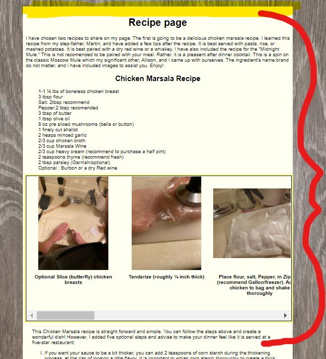
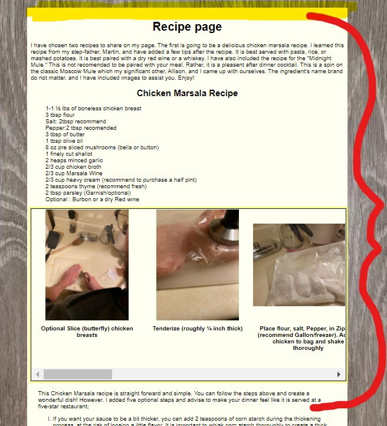
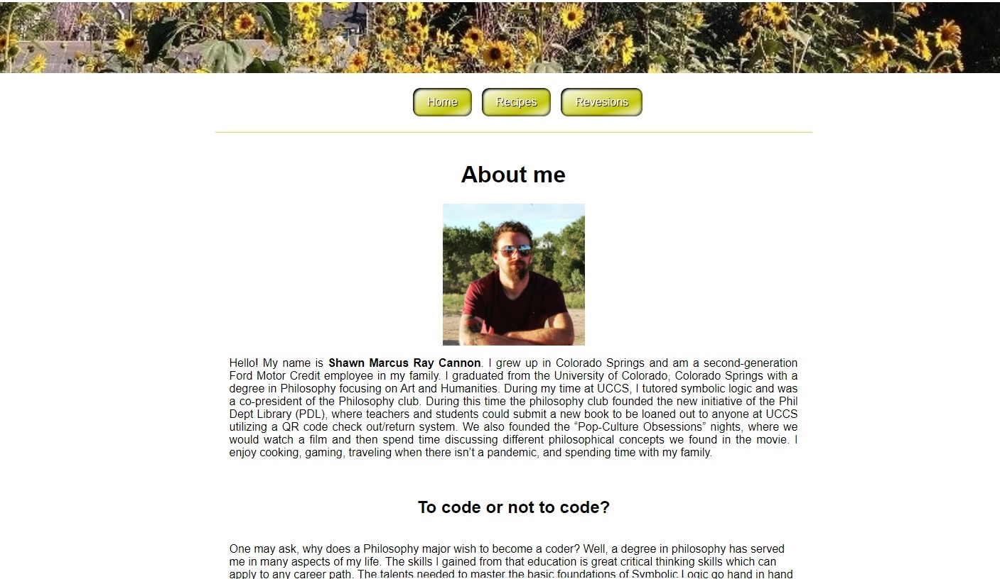
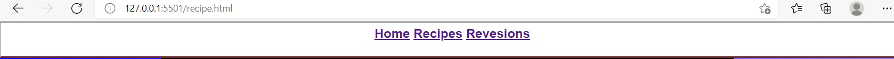
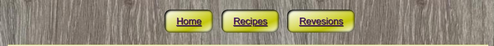

Changes
For this project I chose to ask Allison, previously mentioned, what changes I could make. Allison and I both enjoy finding new meals to try out. When I first approached her with the chicken marsala recipe page layout, we reflected on how annoying it can be to attempt to navigate the layout of the page. Going back and forth on a long list of instructions is not helpful for when we are cooking. So, I abandoned the layout that is normally found on recipe pages, opting for a box containing the steps of the recipe with a horizontal scroll bar. This made a layout which allows viewers to see the listed ingredients and the step-by-step guide simultaneously. I also opted for a plainer background to make for easier reading and created a simple border to create a cleaner page experience. I chose to leave the soon to be mentioned banner off of this page intentionally as to not create too many images, distracting the user.
 

I was very impressed with the banner that was created on the sample site made by Kyle. I wanted to create a similar banner, but with an image of my brother's beautiful sunflower forest. However, Allison pointed out that the image was unable to remain static and would change with the size of the browser window. Rather than keeping it as "behind" the HTML I opted to place it behind the body element. This not only made a much cleaner outline for the main body box, but it also put it in a container which stopped it from being manipulated by the window size!

Lastly, Allison pointed out how boring my navigation bar was. We remembered that part of what makes a great site or application so enjoyable is how it is and more than simple lines and text. I took the old navigation bar, turned them into buttons, and even made the color change. This creates a unique interaction on the site that can make it stand out from those similar to it.
